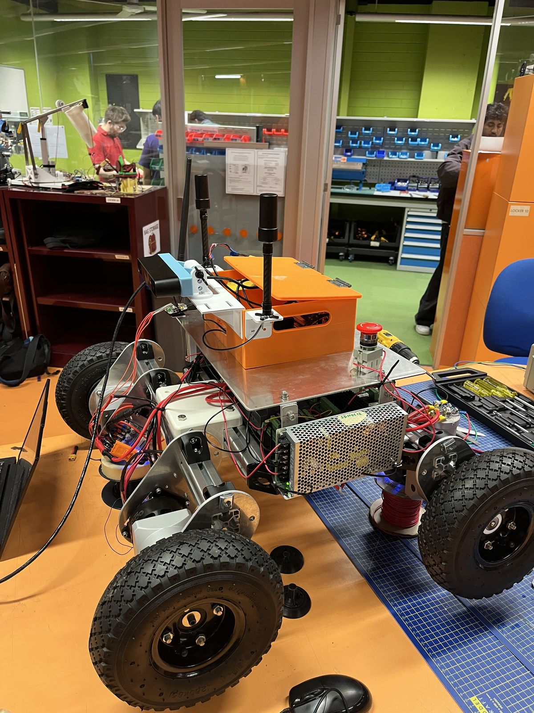
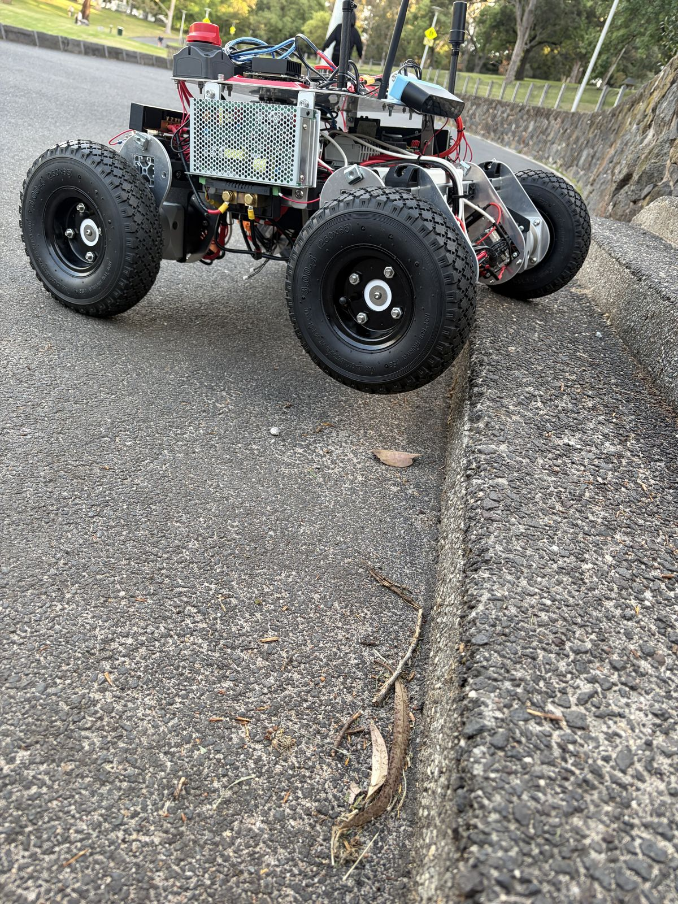
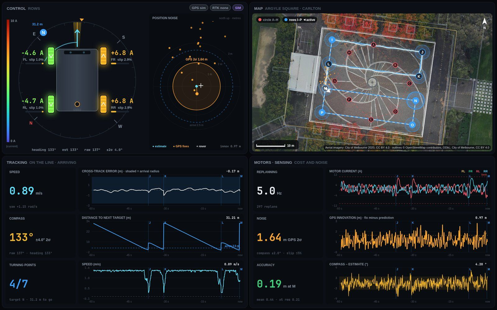
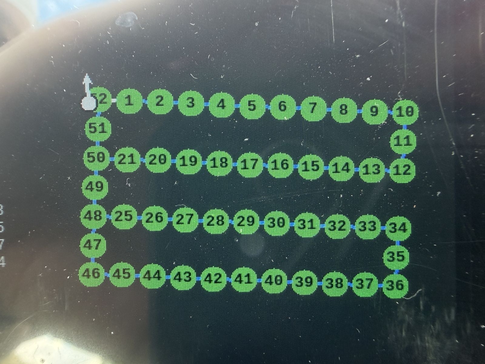

The rover
Two prototypes and the software between them
Prototype 1 proved the software and control chain on a cheap, easy-to-change platform. Prototype 2 scaled up the chassis, drivetrain and power so the project could be tested outdoors.
P1 and P2
What changed between prototypes
| Prototype 1 | Prototype 2 | |
|---|---|---|
| Chassis | 3D-printed PLA box, 270 × 180 × 100 mm | 4040 aluminium extrusion, about 760 × 740 mm and 50 kg |
| Drive | Four N20 gearmotors (150:1) with Hall encoders, two TB6612FNG drivers | Four ODrive M8325s motors through 10:1 gearboxes, one ODrive S1 per wheel |
| Wheels and speed | 69 mm wheels; about 0.7 m/s at the 200 rpm firmware limit | 260 mm pneumatic wheels; 6 km/h (1.67 m/s) design speed |
| Low-level control | ESP32 running two speed PID loops over USB serial | ODrive S1 controllers on a shared CAN bus |
| Power | Two 3S LiPo packs, one for logic and one for the motors | Two 6S packs in series (12S, 50.4 V max), Batrium BMS, DC-DC converters for compute |
| Compute | Raspberry Pi 5; localisation on a separate laptop | Raspberry Pi 5 for the rover software; Jetson Orin for obstacle detection |
| Positioning | u-blox NEO-M9N single antenna, MPU-6050 IMU, HMC5883L magnetometer on a Pico 2 hub | Unicore UM982 dual-antenna RTK, ZED 2i IMU, motor encoders |
| Operator link | Wi-Fi hotspot on the Pi, PlayStation controller | Long-range radio to a base station |
| Stopping | Ultrasonic sensors | Physical E-stop and contactors, state-machine stop, remote stop |
What Prototype 1 taught us
- Soil gives a robot nothing to recognise. We dropped LiDAR and visual SLAM for GNSS fused with IMU and wheel odometry, and that choice shapes the whole project.
- A control loop can be stable while it drives the wrong way. Motor and encoder direction have to agree physically, not be patched in software.
- Motors and the computer can't share a power rail. Ours corrupted the Pi's SD card on boot.
- Safety reflexes belong in a layer that keeps working when the main computer crashes.
First numbers
The same walk exposed a magnetometer calibration fault that overstated path length about 2.4 times.
The build
Prototype 2, July to October
The team built Prototype 2 together to Morne Nel's electrical design. It first drove on 3 September.




Specification
- Chassis
- 4040 aluminium T-slot extrusion, T-nuts and gusseted corner brackets; aluminium motor and gearbox plates
- Size
- About 760 × 740 mm, about 50 kg
- Drive
- Skid steer. Four ODrive M8325s motors, 10:1 gearboxes, one ODrive S1 driver each
- Speed
- 6 km/h design: 122 rpm at a 260 mm wheel, 1,220 rpm at the motor
- Battery
- Two 16,000 mAh 6S Tattu packs in series, 50.4 V max
- BMS
- Batrium Watchmon, Shuntmon and two K9 cell monitors, on CAN
- Compute
- Raspberry Pi 5 running ROS 2 Jazzy; Jetson Orin for obstacle detection
- Positioning
- Holybro H-RTK Unicore UM982, dual antenna, through a Pixhawk 6C
- Perception
- ZED 2i stereo camera, which also supplies the IMU
- Link
- Holybro long-range telemetry radio to a Pi 5 base station
What broke, and what replaced it
- Motor hubs
- Printed in PLA for quick iteration, they split along the layer lines inside the gearbox. Replaced with machined aluminium.
- Front pivot
- An ASA centre pivot with a deep-groove bearing broke as the rover got heavier. Replaced with a stiff joint.
- Battery latch
- A levered latch became unreachable once the hardware plate was fitted. Replaced with a toothed slide locked by a pin.
- Gearbox support
- Each motor, hub and gearbox hung from its ends and rubbed at the hub. A bracket along two edges of the gearbox, added mid-September, made the rover run noticeably smoother.
- CAN pins
- Pins pulled out of the ODrive plug housings and had to be rewired. Locking connectors are needed before field use.
Power and interlocks
Two contactors, two kinds of stop
Every contactor and relay contact in the chain is normally open, so losing coil power opens the circuit. The only normally closed contact is the E-stop button itself.
Contactor 1 feeds everything that thinks. Its coil runs through the BMS relay in series with the physical E-stop. When it closes, the main bus powers the 5 V, 12 V and 24 V converters, and through them the Pi, the Jetson, the radio and the GNSS receiver. Opening it switches off every computer on the rover, and also removes the coil supply for contactor 2.
Contactor 2 feeds the motors. Its coil is switched through two relays in series plus a pre-charge path. Opening it removes motor power but keeps the computers running, so the rover can still report what happened.
Flyback diodes protect both coils, and the Pi reaches the relay board through optoisolators so no ground path links the voltage domains. The BMS sits on its own 12 V supply ahead of both contactors, so it stays awake whatever they do.
Arming sequence
- A fresh arm request arrives from the base station. A request still held after a reboot does nothing, so the rover can't arm itself.
- A solid-state relay closes through a 50 Ω resistor, limiting inrush to about 1 A at 50.4 V, and the drive capacitors charge for 5 s.
- If battery and bus voltage agree within 2 V, contactor 2 closes and the pre-charge relay releases. A bigger gap means a short or a failed drive, and the sequence aborts to DISARMED.
BMS limits
From one of Batrium's pre-mapped LiPo profiles, not set by hand. Any breach opens the BMS relay and contactor 1 with no software involved.
| Cell over-voltage | 4.05 V |
|---|---|
| Cell under-voltage | 3.00 V |
| Discharge temperature | −20 to 60 °C |
| Peak current | 80 A |
On top of that, the state machine stops the rover if pack or bus voltage falls below 40.8 V (12 × 3.4 V) while armed.
Software layers
Each job runs in its own ROS 2 node
A valid velocity command can exist in the ROS graph without being allowed to reach the motors. Where motion comes from, whether it's permitted, and how a wheel turns are separate responsibilities.
Raspberry Pi 5 with two screens and a matching radio.
Reports the link lost after 0.5 s without a valid frame, removes the arm request and publishes zero velocity.
Holds the plan, sends Nav2 one goal at a time, reports progress at 2 Hz.
Operator drive commands from the base station.
Forwards a stream only when the state machine's mode allows it. Priority: E-stop, then tele-op, then autonomous.
Converts body velocity to four wheel speeds and sends zero if no fresh command arrives within 0.5 s.
One per wheel, individually addressed on one bus.
Alongside the command path
Owns the operating mode, arming and pre-charge over GPIO. Drive permission stays false in DISARMED and PRECHARGE.
UM982 RTK, ZED 2i IMU and wheel encoders fused into one pose.
ZED 2i depth; holds the rover for anything inside 3 m or a silent camera.
This is the designed architecture. In the 14 October field runs a simpler route executor steered straight from the GNSS fix, in place of the mission node and Nav2.
A restored radio link never counts as permission to move. After a communication loss or an E-stop the rover returns to DISARMED and needs a new, deliberate arm sequence. The same rule applies to command streams: re-establishing /cmd_vel_tele or /cmd_vel_nav doesn't recreate drive permission.
Mission node
The rover keeps its own plan
Nav2 drives to a goal but has no idea of a mission. The base station holds the mission, but reaches the rover over a link that drops packets. So the rover sequences the mission on board.
The node receives the plan over the radio, sends Nav2 one waypoint at a time, cancels the goal on an E-stop, obstacle or fault, and reports to the base station at 2 Hz. Each waypoint travels as latitude, longitude and heading: 20 bytes, against about 56 for a full pose, on a link that carries about 250 bytes a packet.
It sits outside every stop path. It never publishes velocity and can't reach the contactors or the CAN bus, so if it fails the rover loses mission progress and telemetry, and all three stop paths stay intact. For the same reason the remote E-stop runs from the radio bridge straight to the state machine.
It saves the plan and progress at every waypoint with an atomic write. On start-up it treats the saved file as untrusted, and a restored mission always comes up latched: nobody may be near the rover when power returns.
30 logic tests and bench tests T1–T10 pass against a stubbed Nav2. Bench The node hasn't run against the real Nav2 or on the rover yet.
Nine mission states
| State | Meaning |
|---|---|
| IDLE | No plan loaded |
| READY | Plan loaded, not driving |
| RUNNING | A Nav2 goal is in flight |
| HOLD_MANUAL | Tele-op has the rover; clears when the mode returns to auto |
| HOLD_OBSTACLE | Something is in the way; resumes the same waypoint when it clears |
| HOLD_BATTERY | Below the 42.5 V reserve; finishes the current leg, starts no new one |
| ESTOP | Latched; needs the E-stop released and a deliberate clear |
| FAULT | Latched; an input went silent or retries ran out |
| COMPLETE | Every waypoint reached |
Checked ten times a second, top rule wins
- A new plan arrived: replace the waypoints and restart (ignored while latched)
- E-stop asserted: cancel the goal and latch ESTOP
- A monitored input went silent: cancel and latch FAULT
- Already latched: stay latched until a clear
- Nav2 returned a result: advance, retry, or fault when retries run out
- Obstacle detected: cancel and hold on the same waypoint
- Mode isn't autonomous: cancel and hold for tele-op
- Battery below reserve: finish this leg, then hold
- Otherwise: send the goal for the current waypoint
Obstacles sit above the mode check, so a mode change can't mask a detection. The battery rule sits below the goal check, so the rover stops at a waypoint rather than halfway along a tramline.
Localisation
Smooth for the controller, anchored for the tramline
A path controller needs a pose that doesn't jump. A tramline follower needs one that doesn't drift. Two robot_localization filters give one of each, and the map-to-odom transform between them updates in small steps as GNSS corrections arrive.
The rover runs the same three nodes, with the same topic and frame names, as the Isaac Sim model. Both filters run in 2D mode.
| Node | Fuses | Publishes |
|---|---|---|
| ekf_odom | Wheel odometry, ZED 2i IMU | Smooth local pose; odom → base_link |
| navsat_transform_node | GNSS fix, IMU heading, filtered odometry | The fix as odometry in the world frame |
| ekf_map | Wheel odometry, IMU, GNSS odometry | Global pose; map → odom |
When GNSS drops out, ekf_odom carries on and ekf_map's uncertainty grows. Published results show error can pass the 20–50 mm tolerance within seconds, so the rover can only ride out brief dropouts.
Base station
The operator's end of the link
The base station supervises. Navigation and every safety decision stay on the rover, because a rural radio link can't be assumed to stay up.


Dry run
Faults we found before the wheels turned
Before the motor-control and safety nodes touched live outputs, a dry run fed them normal and deliberately broken inputs with CAN transmission and GPIO disabled. Each of these could have weakened a safety behaviour without any obvious symptom in ordinary driving. Bench
| What we saw | Why | Fix |
|---|---|---|
| A malformed packet kept a dead link "alive" | The receive time updated before validation | The last-valid timestamp updates only after a packet parses and validates |
| A recovered link kept the old arm request | Reconnecting could recreate the armed state | Arming became edge-triggered: arm must drop, then rise again |
| A mode change and an E-stop in the same cycle | Normal mode logic could run before the stop | Stop and link-loss checks run ahead of every normal transition |
| Yaw commands gave almost equal wheel speeds | Track width was still a placeholder | Track width became a required parameter; ± yaw became a mandatory test |
| One side needed the opposite motor sign | Mirrored motor mounting | Per-wheel direction signs, checked with forward and reverse vectors |
| CAN payload decoded wrongly | Byte order and type, not the speed maths | Explicit little-endian float32 velocity and torque feed-forward |
| Link timeout fired at start-up | No link had been established yet | The bridge tells "not yet established" from "established then lost" |
Known limitations
- The command link between base station and rover isn't authenticated.
- No visual or audible alarm is fitted.
- One sensing technology, a stereo camera, detects obstacles.
- The Pi gets no electrical feedback from the pre-charge and contactor hardware, so it treats its own commands as fact.
- The 0.5 s link timeout and 5 s pre-charge window are configuration settings, not validated values.
- No functional-safety lifecycle was carried out.
Checked on the built rover
- All four wheels held 36.7 rpm (0.50 m/s) on the stand, measured-to-commanded ratio 1.00, 13 October. Rover
- The remote E-stop stopped the wheels on 8 and 13 October.
- The physical E-stop removed motor power, and the Pi, Jetson and radio went down with it, as designed.
- After either E-stop the rover stayed still until a new arm request.
- Indoors, it stopped for an obstacle, waited, and carried on once it cleared.
- The under-voltage stop opened the contactor, with the voltage simulated in software.
Apart from the stand test, these were observations, not logged measurements.